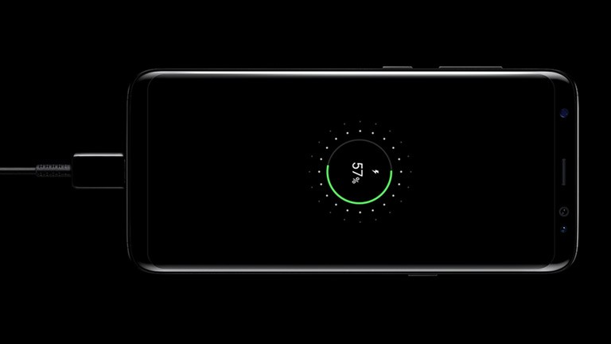

The iPhone X along with the iPhone 8 & 8+ are the first ever iPhones to support wireless charging. Because of the glass back on these new phones it's possible to charge these devices with a wireless charging pad. Keep in mind that this technology isn't new. The galaxy phones have had this technology for the last 3 years and quite frankly wireless charging is better adapted on the Samsung Galaxy S8.
G A L A X Y S 8
The great thing about the Samsung galaxy phones is that they not only support wireless charging but they give you fast wired charging right outside the box. Since the introduction of USB - C which is not found on the iPhone, it makes charging the Samsung galaxy s8 phones easy and fast. You can have a full battery in just 1 hour and 20 min, or a small top up in battery percentage in just a few minutes. The S8 supports a 3000 mAh battery and the S8+ supports a 3500 mAh battery. The iPhone X supports a 2716 milliamp-hour mAh battery
Y A S H S M © W E B S I T E S